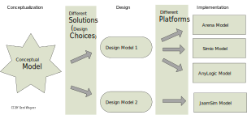
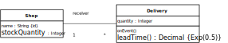
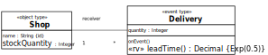
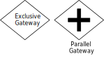
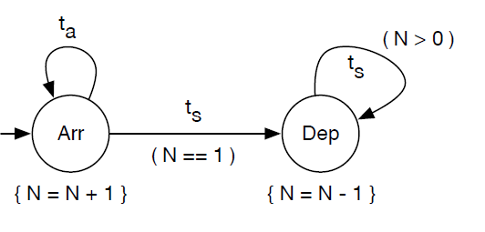
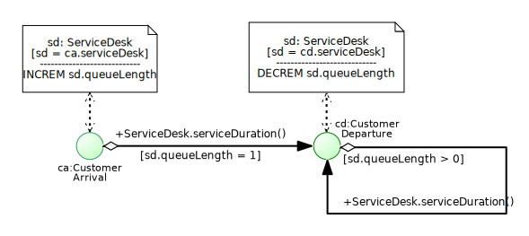
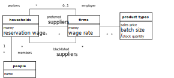
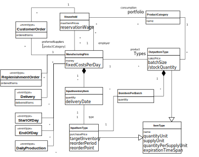
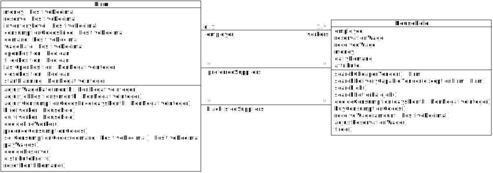

Is DES about "entities flowing through the system", according to the 'process worldview'?
No, this is a widespread misconception!
Rather, this metaphor refers to discrete Processing Networks, which represent a system pattern
that is mainly found in manufacturing and service industries
For instance, assembly lines, banks and hospitals can be modeled as Processing Networks
But there are many other discrete systems that cannot be modeled as Processing Networks!
Then, what is DES?
An umbrella term subsuming a variety of computer simulation approaches:
Other (academic) paradigms/formalisms: Petri Nets, DEVS*, ...
What is a Discrete System?
A system consisting of objects and a discrete flow of events that
change the state of affected objects and
cause follow-up events
A state transition system where
events are transitions and
the system state consists of object states and future events
Example 1: A Service Desk as a Simple Queueing System
The customers arriving at a service desk have to wait in a queue when the service desk is busy. Otherwise, when the queue is empty and the service desk is not busy, they are immediately served by the service clerk. Whenever a service is completed, the served customer departs and the next customer from the queue, if there is any, will be served.
Potentially relevant object types: customers, service desks, service queues, service clerks.
Potentially relevant event types: customer arrivals, customers queuing up, service start, service end, customer departures.
Example 1: Conceptual Information Model
Causal Regularities and Event Rules
An event type is associated with a causal regularity, which implies certain state changes
and follow-up events when an event of that type occurs
Causal regularities can be modeled in the form of event rules
Example: Whenever an Arrival event occurs and the queue is empty, start a new service
Modeling a Discrete System
For modeling a Discrete System, we have to describe its
object types, e.g., in the form of classes of an object-oriented
language;
event types, e.g., in the form of classes of an object-oriented
language;
event rules (causal regularities), e.g., in the form of onEvent
methods of the class that implements the triggering event type.
Part I
Model-Based
Simulation Engineering
Why should we make models?
Today, in many M&S projects, developers make a model in their mind, and then jump
from their mental models to code without making explicit models in a visual modeling language
Even in simulation tutorials and textbooks you hardly find any model diagrams (at most some "flow charts")
Making conceptual models and design models greatly helps to document,
communicate, share,
reuse, maintain and
evolve your simulation models
Three Kinds of Models
In model-based engineering there is a distinction between three kinds of models:
domain models, which are descriptions of the system under investigation, and not of the artifact to be developed;
in this sense, they are IT-independent or solution-independent models
design models, which express computational solution designs independently of a target technology platform
implementation models, which are platform-specific models
In IS/SE, "conceptual model" = domain model.
In M&S, the term "conceptual model" has been used ambiguosly both for domain model and for design model.
Conceptualization → Design → Implementation

MDE Example
Viewpoints
A domain model does not consist of just one model diagram including all viewpoints (or aspects) of the system under investigation
Rather it consists of a set of models, one (or more) for each viewpoint
The two most important viewpoints, crosscutting all three modeling levels (domain, design and implementation), are
information modeling, which is concerned with the state structure of the domain
process modeling, which is concerned with the dynamics of the domain
For each viewpoint, there are one (or more) modeling languages to be used for making models for that viewpoint
Information Modeling
Language
Conceptual
Design
Implementation
Entity Relationship (ER) Diagrams
+
+
−
UML Class Diagrams
+
+
+
Process Modeling
Language
Conceptual
Design
Implem.
(Colored) Petri Nets
−
+
+
UML State Machines ("state charts")
−
+
+
UML Activity Diagrams
+
+
+
Business Process Modeling Notation (BPMN)
+
+
+
Part II
Information Modeling
with
UML Class Diagrams
From Entity Types to Classes
Conceptual information modeling: describe the relevant entity types of a domain and the relationships between them
Information design modeling: describe the platform-independent data structures (classes) providing a logical design of a system
Data/class modeling: describe the platform-specific data structures (classes) for implementing a system
Basic Concepts (1)
Classes are visualized as rectangles
Associations between classes are visualized as connection lines with multiplicities at both ends
Notice that the association defines a Shop to be a participant of a Delivery event ("objects participate in events")
Adding Properties and Operations
In class rectangles, we can also define properties and operations, using further compartments
The properties Shop::name, Shop::stockQuantity and Delivery::quantity
The instance-level operation Delivery::onEvent
The class-level operation Delivery::leadTime
Adding Constraints

An ID constraint stating that the property is a standard identifier, or primary key, attribute
An operation constraint: the operation Delivery::leadTime must implement the exponential probability distribution with event rate 0.5
Categorizing Model Elements

UML allows defining special categories of modeling elements called ‘stereotypes’
«object type» and «event type» are two different categories of entity types
«rv» defines a category of operations/methods that represent a random variable
Visual Paradigm (its community
edition is free for non-commercial use)
Part III
Process Modeling
with
B P M N
What is BPMN?
BPMN is an activity-based graphical modeling language for defining business process types
following the flow-chart metaphor
In 2011, the Object Management Group (OMG) has released version 2.0 of BPMN with a (semi-formal) semantics
based on the Petri net mechanism of a token flow representing the handling of a specific case
The most important elements of BPMN are: activities, events, (control flow) gateways, sequence flow,
'pools' (actors), and (asynchronous) message flow
Activities
Defined as "work that is performed within a process"
A Task is an atomic Activity
A Sub-Process is a composite Activity, which can be either in a collapsed or in an expanded view
An Activity is temporally framed by an activity start and an activity end event (typically not shown)
Events
Defined as "something that 'happens' during the course of a process, affecting the process flow"
A distinction between Start, Intermediate and End event is made with respect to the case handling semantics
Notice that, ontologically, an Activity is also an event, composed of at least an activity start and an activity end event
But BPMN does not account for this!
Gateways and Sequence Flows

Defined as "controlling how a process flows"
A plain gateway symbol denotes an Exclusive OR-Split, if there are 2 or more output flows,
or an Exclusive OR-Join, if there are 2 or more input flows
A gateway with a plus symbol denotes an AND-Split, if there are 2 or more output flows, or an AND-Join,
if there are 2 or more input flows
Sequence Flows define the temporal order of Events, Activities, and Gateways
Event Rules
ON (event type)
DO (event routine)
Rule Diagram
customer arrival
If the service desk is busy, then the new customer queues up,
else the service starts.
service start
After some time, the service ends.
service end
The served customer departs. If there are still customers waiting in the queue,
then the next service starts.
A Conceptual Process Model
... integrates all event rule models:
Issues with BPMN
BPMN does not provide a clear/unambiguos meaning of Sequence Flows
According to the semantics of BPMN, actions/activities are not events
The official BPMN (token flow) semantics is limited to case handling processes
It disallows, for instance, to model processes where several cases are handled in parallel
and compete for resources
For a long time, it was an open issue how to best use BPMN, and how to adapt its syntax and semantics,
for simulation modeling
This issue has been solved in OEM&S
Useful Resources
A good modeling tool, with the advantages of an online solution, is the
Signavio Process Editor, which is
free for academic use
Event Graphs and BPMN
Event graphs (EGs) have been proposed for DES modeling by Schruben in 1983.

An event graph modeling the service desk system in Schruben's original notation.
Strengths and Weaknesses of Event Graphs
Strengths:
Event graphs capture the fundamental event scheduling paradigm with annotated arrows between event circles.
Weaknesses:
Event graphs lack a visual notation for (conditional and parallel) branching.
Event graphs do not support OO state structure modeling (with objects and attributes).
From EGs to BPMN
BPMN Process Diagrams are a natural evolution/extension of EGs.
BPMN adds Gateways (for branching), Data Objects and Activities to EGs.
However, the syntax and semantics of BPMN (especially Data Objects) needs to be adapted.
The resulting variant of BPMN is called Discrete Event Process Modeling Notation (DPMN).
A DPMN Model

Part IV
How to Make Models for Simulation
Object Event Modeling (OEM)
Model object and event types as stereotyped classes in a UML class diagram
Add associations among object types (e.g., queues are ordered association ends)
Add associations between object types and event types whenever objects (of some type) participate in events (of some type)
Model random variables as stereotyped operations constrained to implement a certain probability distribution.
Model event rules in an event rule table associating a triggering event expression with an event routine specified in pseudo-code
Model each event rule from the event rule table in the form of an "atomic" BPMN process diagram
Model the sequencing of events by merging all "atomic" BPMN process diagrams into one BPMN process diagram, if possible
OEM is Well-Founded by a Formal Semantics and an Implementation
OEM results in a simulation design model that has a well-defined operational semantics, as shown in (Wagner, 2017a)
An OEM model can, in principle, be implemented with any OO simulation technology
However, a straightforward implementation can only be expected from a technology that implements the OES paradigm, such as the OES JavaScript (OESjs) framework presented in (Wagner, 2017c)
Example: A Minimal Economy
... consists of two types of economic actors only: households and firms.
Households play the roles of workers/employees and consumers.
Firms play the roles of employers and producers/suppliers.
Potentially relevant event types: start of month, customer orders, replenishment orders, deliveries, daily production, end of month, ...
Making a conceptual process model: for each relevant event type, describe the effects of events of that type ...
Conceptual Information Model (1)

This is just a core model that has to be elaborated...
Conceptual Information Model (2)

Conceptual Process Model (1)
At the start of a month,
firms may adjust their wage rate and consumption goods price as well as their number of employees;
households may search for cheaper vendors and for a job (if unemployed) or a better paid job (if employed),
as well as decide on their monthly consumption budget.
Conceptual Process Model (2)
On each day,
households purchase consumption goods and
firms produce new consumption goods depending on their number of workers.
Conceptual Process Model (3)
At the end of a month,
firms distribute profits, pay wages, and decide about firing a worker;
households receive their wage and may adjust their reservation wage.
Design Modeling
Making an information design model
Making a process design model
Information Design
Purpose of the model: confirm a number of stylized economic facts and laws
Make several simplifying assumptions:
Abstract away from individual customer orders.
Abstract away from the individual members of a household
Assume that there is only one consumption good
...
Required object types: Household and Firm
Information Design Model

Implementation (Modeling)
Information viewpoint: making a class model for the target programming laguage/platform and coding it
Process viewpoint: coding the event rules defined by the process design model (e.g., in the form of onEvent methods
of the event class concerned)
How to Proceed?
This tutorial is an ongoing project
You can find the presentation slides and other materials at https://sim4edu.com
You can contribute by developing your own modeling examples
Just contact me at G.Wagner@b-tu.de
☺
Or invite me (as a visiting professor or guest researcher) during my next sabbatical leave in winter 2019/20